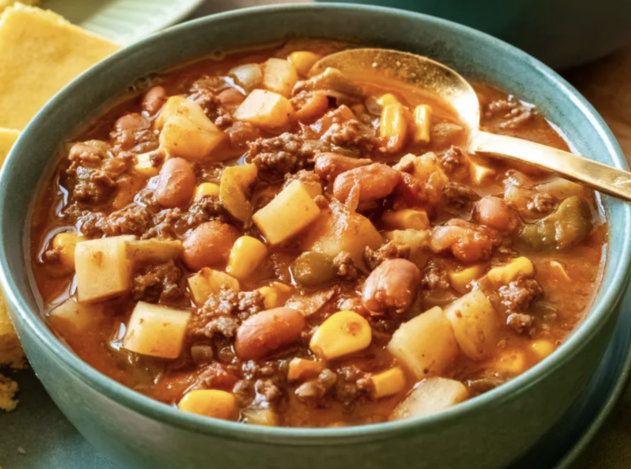

Back to Home
Cowboy Soup

Description
This hearty soup is perfect for a cold day. Packed with beans, vegetables, and spices, it's sure to warm you up!
Ingredients
- 1 lb ground beef
- 1 can kidney beans
- 1 can black beans
- 1 can diced tomatoes
- 1 onion, chopped
- 2 cloves garlic, minced
- 1 tsp chili powder
- 1 tsp cumin
- Salt and pepper to taste
Steps
- In a large pot, brown the ground beef over medium heat. Drain excess fat.
- Add the chopped onion and minced garlic to the pot and sauté until softened.
- Stir in the chili powder, cumin, salt, and pepper.
- Add the kidney beans, black beans, and diced tomatoes. Stir to combine.
- Bring the soup to a boil, then reduce heat and let it simmer for 20-30 minutes.
- Serve hot with your favorite toppings!
Reference Link: Cowboy Soup